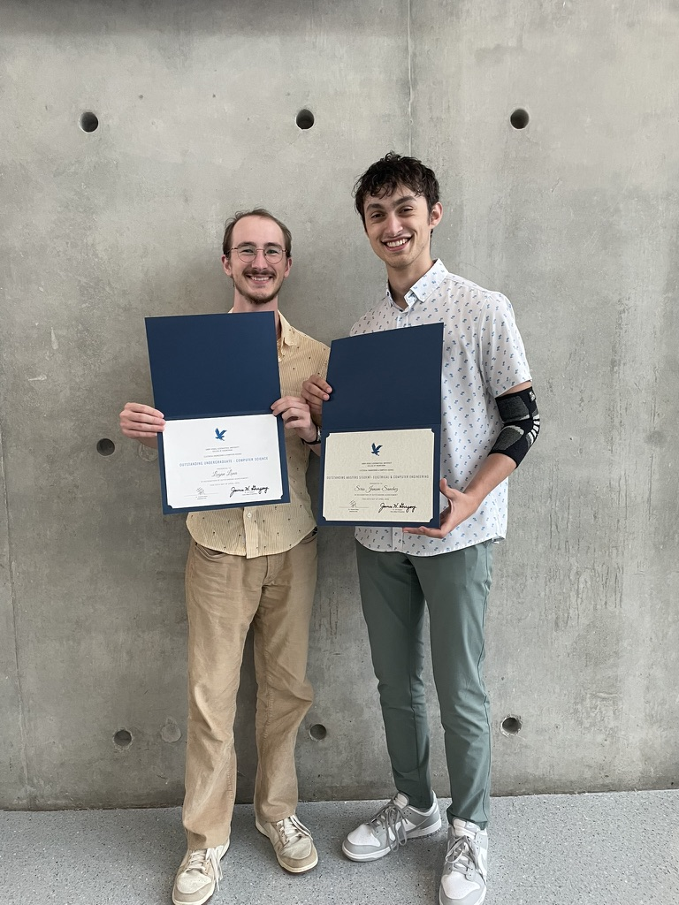
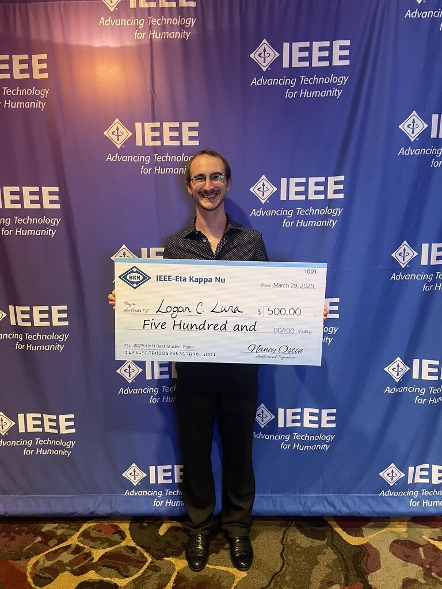

- M.S. Computer Science, Georgia Institute of Technology
- B.S. Computer Science, Embry-Riddle Aeronautical University (Honors)
- DoW SMART Scholar
Selected Awards
-

Embry-Riddle's Outstanding Undergraduate in Computer Science, 2025 & 2026. -

IEEE-Eta Kappa Nu Best Paper Award, 2025.
For “Dueling Deep Q-Learning for Intrusion Detection” at IEEE SoutheastCon 2025. -
 1st Place, Embry-Riddle Student Research Symposium, 2023.
1st Place, Embry-Riddle Student Research Symposium, 2023.
For “Enhancing Aircraft Recognition and Localization through Object Detection and Feature Point Tracking with Kalman Filtering”. -
DoW SMART (Science, Mathematics, and Research for Transformation) Scholarship, 2023–Present.
-
Dean’s List, Honors Program, Embry-Riddle Aeronautical University.
Grants & Funding
Total funding secured: $27,960
-
Center for Aerospace Resilient Systems (CARS) Research Grant — $24,000, Spring 2026.
AI for Data Anomaly Detection in a Satellite Learning Laboratory (SATLL) (Project Lead). -
Embry-Riddle Office of Undergraduate Research Spark Grant — $600, 2025.
Conference travel support for IEEE SoutheastCon 2025 (Project Lead). -
Embry-Riddle SIG Research Project Grant — $3,360, 2024–2025.
Signal-Centric Remote Sensing via Alternative Preprocessing and Acoustic Processing for ML-Driven Applications (Project Lead).